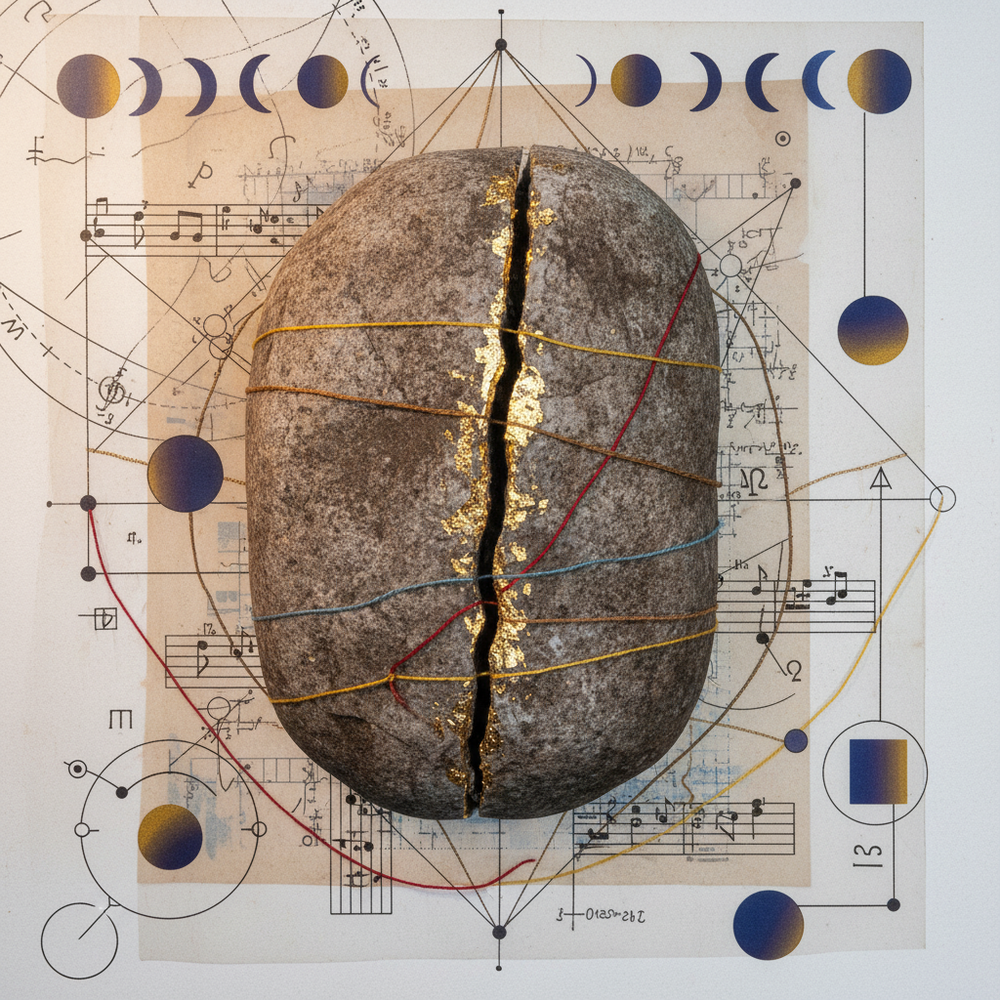

WB_NO. 24/26 — SERIAL: 4892-00
Bone Warming
to Heart
A sequential journey from the calcified structure of the Capricorn New Moon to the radiant, solar expansion of the Leo Full Moon.
ARCHETYPE
The Sovereign Builder
ELEMENTAL PIVOT
Earth → Fire
SOMATIC FOCUS
Knees & Cardiac Plexus
TEMPORAL SCALE
14 Ritual Days
Sequential Protocol Summary
01-04
The Calcification Phase
Focus on the skeletal structure. Kneeling meditations. Recognizing the 'bones' of your current work. Silence and cold exposure to stimulate marrow response.
05-10
The Thermic Ascent
Moving heat from the joints to the solar plexus. Rhythmic breathing. The transition from duty-bound labor to creative vitalism.
11-14
Solar Coronation
Full Moon integration. Public expression of the work. Heart-opening postures. Radical visibility of the internal structure.

PLATE 24-B
"The structure must survive the fire for the heart to remain protected."
Somatic Research Prompts
- Where does the rigidity of your skeletal structure inhibit the beat of your pulse?
- Track the temperature of your knees during the New Moon; does the heart cool when the joints stiffen?
- In the act of standing, what 'bone-truth' do you announce to the sun?
Observation Entry